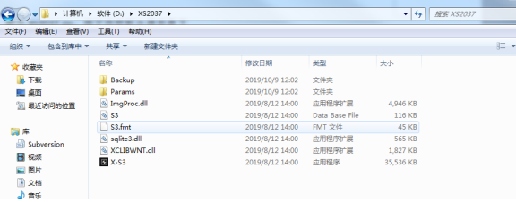
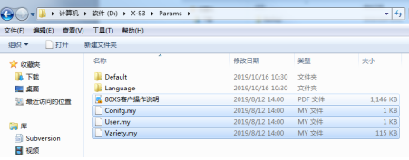
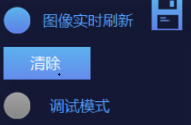
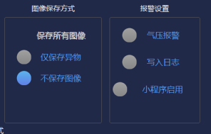

As shown in the figure below: if 80xs software appears as follows, the device software needs to be updated to the latest version

The update steps are as follows:
（1）Unzip xs2037.zip:
Unzip xs2037.zip and put the file in the directory of disk D (as shown below)

(2) replace parameter file:
Open the param folder under the original software path, copy the three files "conifg. My", "user. My" and "variety. My" to the "D: \ xs2037 \ params" and "D: \ xs2037 \ backup" paths, and overwrite the three files under the "D: \ xs2037 \ params" and "D: \ xs2037 \ backup" (as shown below)

(3) modify shortcut:
Delete the shortcuts in the original desktop and startup folder, and copy the x-s3.exe shortcut from "D: \ xs2037 \ x-s3.exe" to the desktop and startup folder.
(4) change settings:
After restarting the device, check whether there is debugging mode as shown in the figure below to determine whether the upgrade software is correct

Next, click "Settings" to enter the "system settings" interface, and select "image saving method" and "alarm settings" as shown below

(5) inspection:
Check the parameters of the previous software debugging and the updated software parameters to determine whether it will affect the production of customers;
Whether the shortcuts in the desktop shortcut and startup folder are replaced correctly.
Note: the main interface debugging mode can only be clicked in the engineer mode. It is recommended to close when the customer's production is finished after parameter debugging.
If you have any questions about the above, you can contact software engineer Le Cui on wechat.